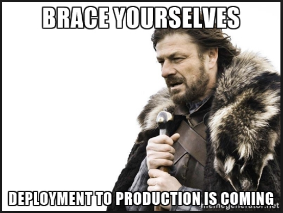

Created: 2017-02-02 Thu 13:55
libpq-dev
apt show libpq-dev | grep -A5 -i 'description'
Description: header files for libpq5 (PostgreSQL library) Header files and static library for compiling C programs to link with the libpq library in order to communicate with a PostgreSQL database backend.
application: cfclient environments: production: url: app.cloudfactory.com staging: url: rcapp.cloudfactory.com stagingnxt: url: appnxt.cloudfactory.com sit: url: sitapp.cloudfactory.com ruby_version: 2.3.0 dependencies: - nodejs - jq - libpq-dev ansicap_deploy_to: "/home/deploy/{{application}}" EC2SPIN_ROLE: app EC2SPIN_ENV: staging
--- - name: From prebaked AMI to full-blown server hosts: localhost vars_files: - group_vars/vars/cfclient.yml roles: - role: ec2spin # add key push devops and bot's keys #toallservers :) - include: add_keys.yml new_hosts=spinner tags: - add_keys - name: Start configuring the spinner hosts: spinner - name: Install apt packages/libraries apt: name={{ item }} state=present update_cache=true with_items: "{{dependencies}}" roles: - role: chruby chruby_ruby_version: "{{ruby_version}}" - role: nginx - role: runit
bundle exec cap deploy production –trace
